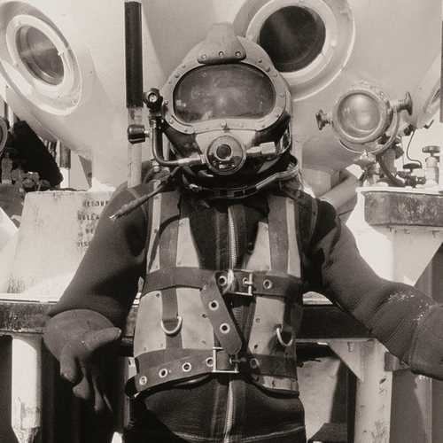
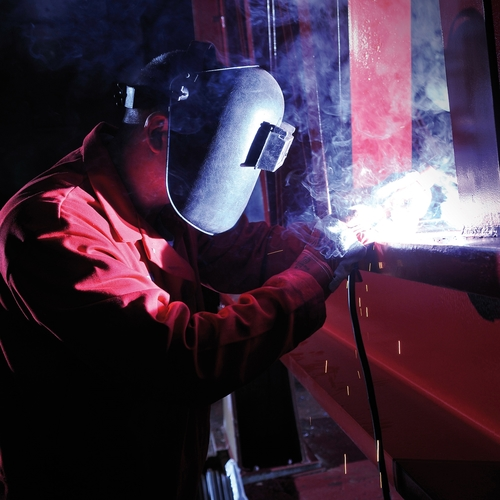
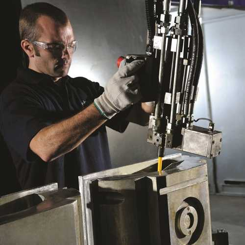
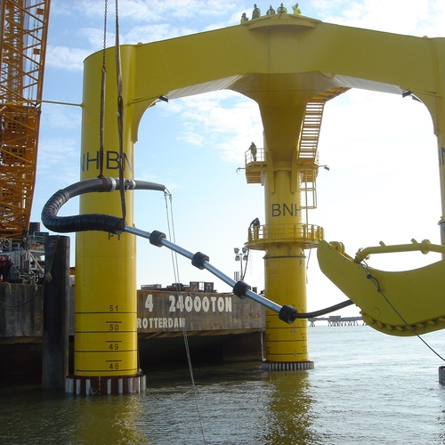
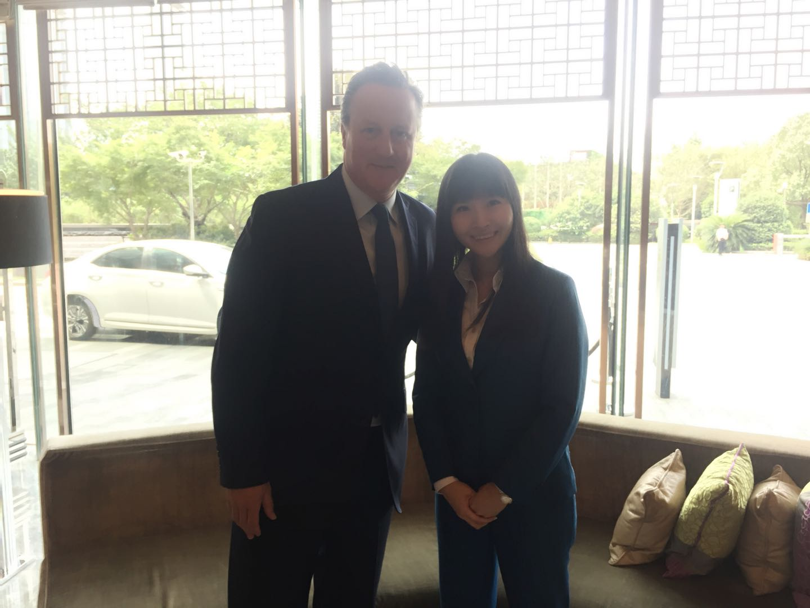

上海泰铠码科技有限公司成立于2018年，是英国泰铠码能源（泰铠码 Energy）的全资子公司
我们为客户提供最先进的、全方位海缆保护解决方案，包括：
- 海缆保护系统（CPS）
- 海洋工程的技术咨询和开发
- 各类海洋工程、环境工程和水利工程施工咨询
- 人员培训
-
1985 泰铠码创立
- 由两名在挪威海岸工作的商业潜水员联手创立
- 主要为石油和天然气行业提供设计咨询服务
-
1995 英国制造
- 总部搬到了英国蒂赛德（Teesside），并组建了一家英国的有限公司
- 为客户提供一站式的整体解决方案
- 为石油和天然气行业提供设计、工程、制造和技术支持
- 定制化的解决方案
- 机械解决方案
- 升降解决方案
-
2003 泰铠码聚氨酯产品诞生
- 市场对聚氨酯产品的需求量增大
- 产品范围扩大到对海底脐带缆、隔水管和采油管线(SURF)设施的保护
- 建立专业化的生产基地
- 定制化的解决方案
- 机械解决方案
- 升降解决方案
- 密封解决方案
-
2008 泰铠码能源创立
- 运用积累了从20多年在石油天然气行业的项目经验和专业知识
- 想要全球对可再生能源的需求
- 致力于海底电缆保护系统的设计，工程和制造
- 为德国的Hooksiel项目开发了第一代TekLink电缆保护系统（CPS）
-
2011 发展与投资
- 继2009年泰铠码Polyurethanes与泰铠码能源合并后，公司进行了管理层收购，从而确保公司能在风电行业进一步茁壮发展
- 泰铠码能源成为海上风电行业电缆保护方案的领军企业
- 获得更多的经验与技术之后，第四代TekLink电缆保护系统（CPS）也随之诞生
-
2019 泰铠码进入中国市场
- 2018年，泰铠码能源亚太区总经理与英国前首相戴维·卡梅伦会面并讨论了中国海上风电市场的现状
- 2019年，上海泰凯码科技有限公司于上海成立